NIVELES
ESCENARIO
A lo largo del desarrollo, no solo para interactuar entre los objetos, sino también para acciones dentro de los mismos objetos se utilizan mensajes, ya que notamos que al extender mucho un mismo bloque y generar muchas validaciones al mismo tiempo, perdíamos el paralelismo entre los procesos que se evalúan en los condicionales. Del mismo modo, la utilización de mensajes da un mayor orden y entendimiento de las acciones de los bloques en cuestión.
Por ejemplo se utiliza el mensaje “Musica_Level2” para que al recibir, reproduzca la música que pertenece al nivel 2. Se realizó de esta manera ya que al introducir los bloques que ejecutan dicha acción en el lugar de la emisión del mensaje, este provocaba un bug que no permitía que se avance de nivel. Con mensajes se informó a cada objeto si deben o no participar de cada bloque, el menú, Lvl 1, 2, 3, pantalla de “ganaste” o “perdiste”, etc.
Para realizar el cambio entre niveles, como este requiere de que se oculten o muestran objetos, se reinicien variables y clones, se cambie de música, se cambie de escenario o obstáculos, optamos realizar este evento desde el escenario una vez que termina el nivel, es decir Cont Madriguera Llena = 6. Se creó un bloque que es común para todos los niveles, para simplificar las evaluaciones que se tengan que hacer al recibir el siguiente nivel.
RANITA

Para realizar el movimiento evaluamos dos condiciones muy necesarias para restringir el movimiento de la rana. Se crean tres variables, “Vidas” (que corresponde a la cantidad de vidas de la rana), “Muerto” (variable que nos permite indicar si la rana tiene o no que moverse y en qué momento) y “En_Aire” (que simboliza cuando la rana está cambiando de disfraz). En todos los casos del movimiento la rana se desplaza 10 unidades en la dirección correspondiente, realiza la animación y se desplaza 10 unidades más. .
Las colisiones de la ranita se hicieron con mensajes y bloques creados específicamente para su
función, de modo que estos sean llamados solamente cuando
se produce el evento que envía el mensaje. De esta forma no se están efectuando la corroboración de
bloques de manera innecesaria.
Los bloques más redundantes para analizar son los de "Morir_rana" y "Comun_ranita".
"Morir_rana" es un bloque que se ejecuta al realizar las colisiones de la ranita y también
para los cambios de niveles, ya que este bloque lo que efectúa es bloquear el movimiento de la rana.
Este bloque actúa en
conjuntos con una variable llamada "Muerto" y así interactuando con el bloque "Comun_ranita"
"Comun_ranita" es un bloque que cumple la función de resetear valores de la ranita para su
reutilización en los
3 niveles del juego.
VEHICULO

¿Sabias que son los clones en Scratch?
Los clones son una funcionalidad de Scratch que nos permite crear indefinidas copias de un objeto y que cada una de ellas se comporte de forma diferente, como queramos en cada momento. Recurso "Clones"
Decidimos que en el recorrido de la calle, los distintos vehículos que salgan no sean iguales, para
ello creamos 6 modelos de autos, 2 camiones y una moto para que pase entre los autos para aumentar
la dificultad.
El verdadero objeto “Vehículo” es uno solo, permanece oculto, los verdaderos objetos que
visualizamos y que pueden matar a la ranita, son clones, que mediante un algoritmo, este adopta un
color (en las posiciones que corresponden a los autos), un tipo de camión (en la posición que
corresponde a los camiones) o que pase la moto, decidiendo qué disfraz corresponde.
Color_auto es un algoritmo que decide qué color será el auto esta por salir. El bloque color
adquiere valor en un bloque que agregamos para hacer surgir los vehículos en la posición inicial
correspondiente, veremos esto luego de un comentario
Para el desarrollo del algoritmo Color_auto descubrimos la falta de una estructura selectiva
múltiple en Scratch, entendemos que esto se debe a que no es precisamente un lenguaje de
programación. Sin embargo hay formas más correctas de realizar este algoritmo, pero para la
realización de este fin sería de mucha más utilidad.
El algoritmo que define el color del vehículo se encuentra dentro de un bloque definido
Posicioninicial_Tipo donde se definen las posiciones iniciales y el tipo de vehículo que aparecerá
en esa posición.
Por último todos los objetos que presenten movimientos, están ligados al valor que adquiere la
variable V_Global_Der, esta variable es la que permite que la velocidad de los vehículos, troncos y
tortugas aumenten su velocidad al elegir la dificultad del juego.
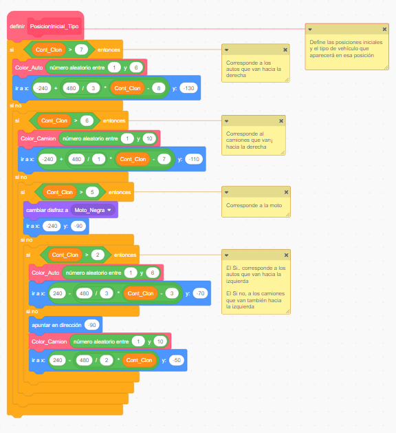
TORTUGUITA "La reveldia de los clones"


Llamamos este objeto metafóricamente como “La rebeldía de los clones” ya que fue el objeto que más
dificultad presentó al momento de la creación de los clones, para alinearlos y que no se superpongan
o separen, para que salgan con una frecuencia armoniosa y claro, no solo hay tortugas en las que
saltar, sino también las llamadas “Tortugas trampa” que salen intercaladas entre las que sí aceptan
transportar a la ranita.
El movimiento de la tortuga se realiza de igual manera que el de los vehículos, pero aplicado a este
objeto. En un inicio las tortugas no eran objetos individuales, sino que el disfraz estaba creado
con las tortugas en fila, para ser programadas bajo el mismo objeto “Tronco”. El principal foco de
duda ante esta situación se dio en que al observar el Frogger original, de Konami, se observó que al
colisionar una tortuga el borde, al final de su recorrido, de forma armoniosa y equitativa, sale por
el otro extremo ese mismo clon. Trabajar este objeto con un disfraz grande, no permite realizar de
forma armoniosa ese recorrido.
Otro foco de duda se dio por la incorporación de las tortugas trampa en el objeto “Troncos”, esto
provocaría que se estén ejecutando muchas condiciones en múltiples variables en un mismo objeto,
provocando bugs. Se creó el disfraz de la tortuga trampa, que es exactamente igual a la tortuga
original, con el fin de identificar el grupo de tortugas que presentan la característica de ser
“Trampa
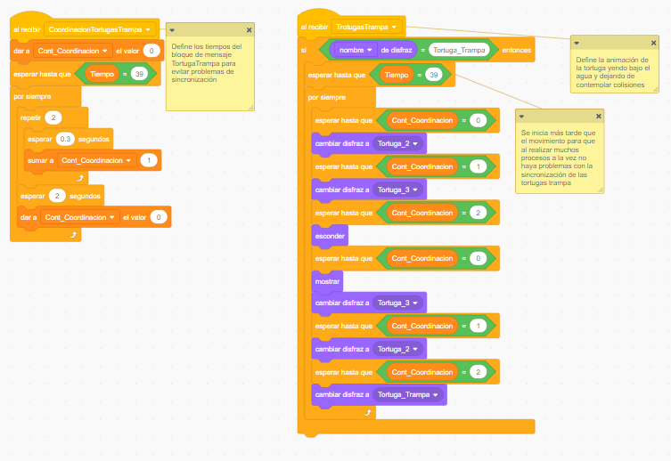
MADRIGUERA
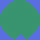
 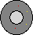
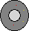

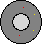
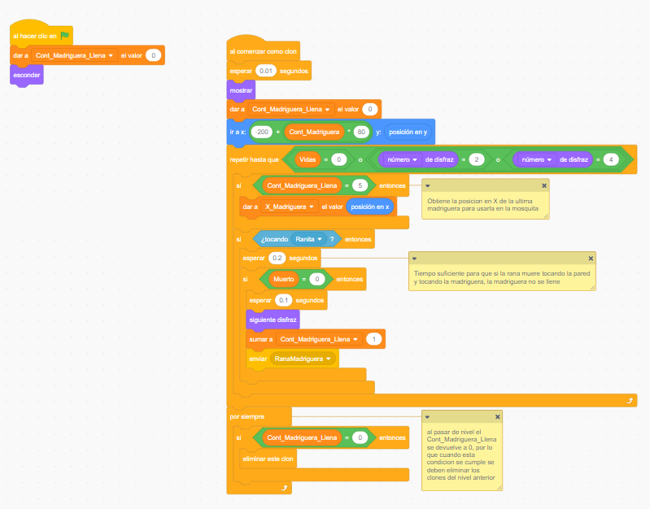
BONUS


 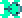
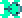
Por ejemplo, el bonus vida está programado partiendo de dos bloques principales, Bonus_Vida, con las características que este debe tener y Disfraz_Bonus_Vida que realiza una sutil animación que nos hace percibir que la moneda está rotando sobre su eje y. En este caso los disfraces de la moneda fueron descargados de Pinterest
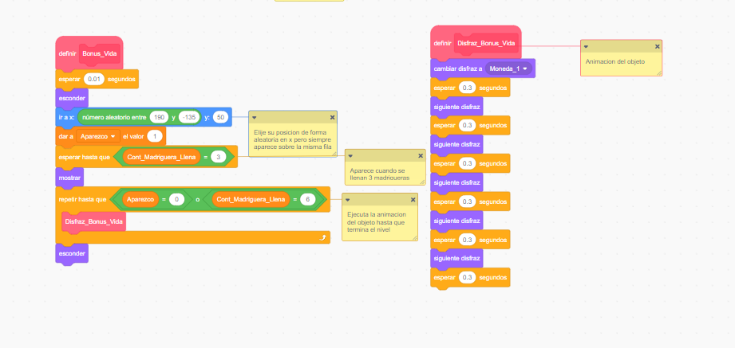
DIFICULTADES y MENU INICIO


El menú de inicio tiene por fondo uno que brinda Scratch dentro de su biblioteca y está compuesto
por 3 objetos: La ranita, Título y Botones. Se decidió que el juego comience con un movimiento
similar al del juego para llegar al bloque “Inicio”, con el fin de que el usuario se familiarice con
los movimientos. Estos bloques también fueron diseñados por nosotros.
Al momento de tener que implementar los niveles de dificultad del juego, nos encontramos con una
gran dificultad, debíamos lograr que cada uno de los 3 niveles, se vuelva más difícil o más fácil,
dependiendo la que elija el usuario. Por fortuna, al momento de plantear los objetos que van a ser
los obstáculos de la ranita, creamos una variable global que mencionamos anteriormente,
“V_Global_Der” y “V_Global_Izq”. De esta manera, planteamos que los niveles de dificultad, afecten
el número de esa variable y provoque que los objetos se muevan más rápido o más lento
DOCUMENTACION
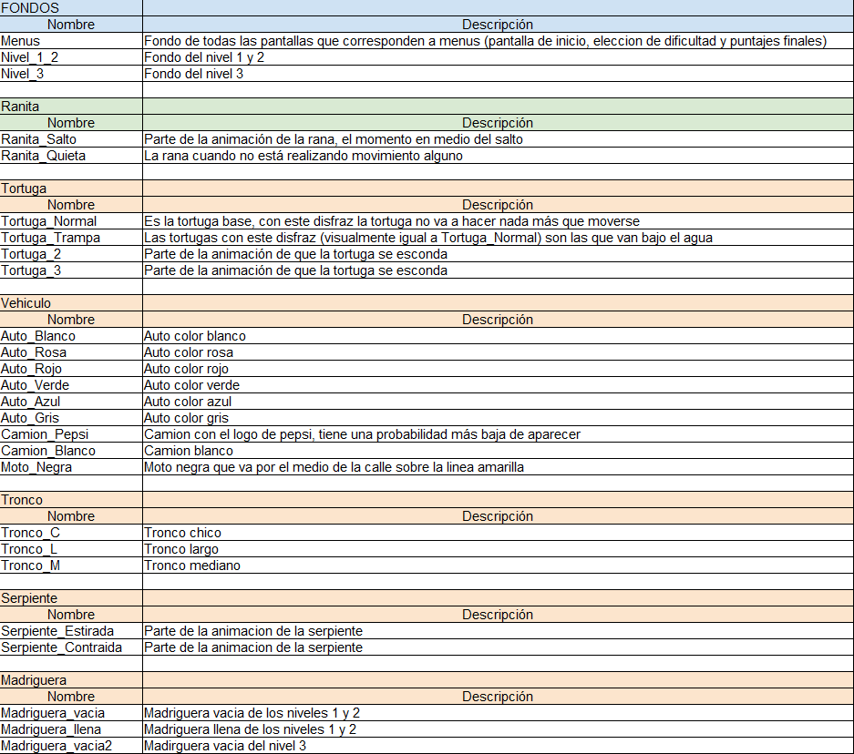

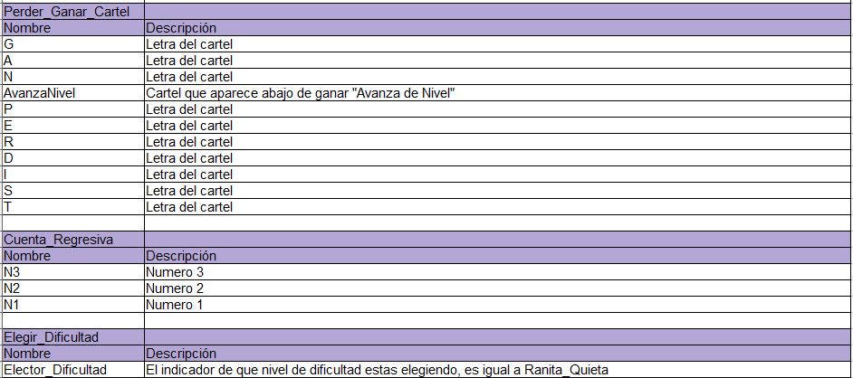
 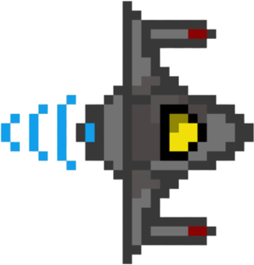
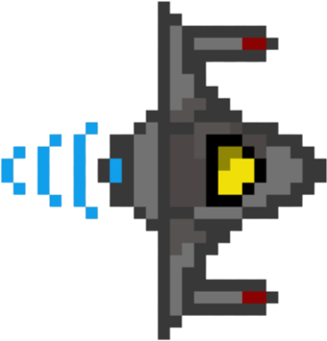


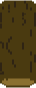
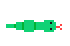
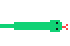
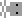